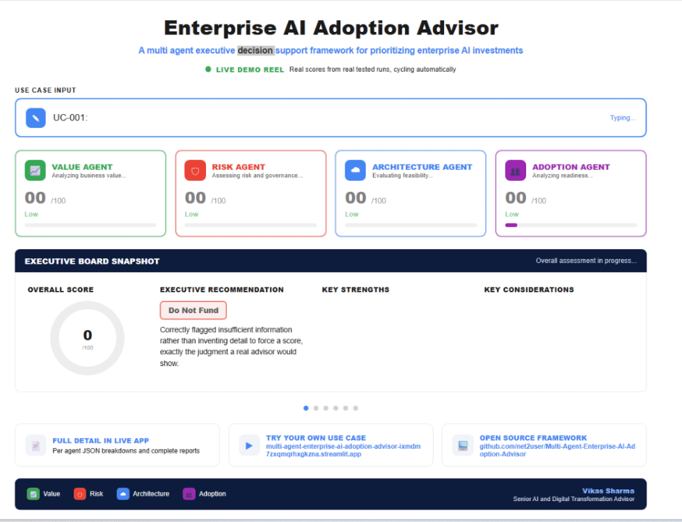
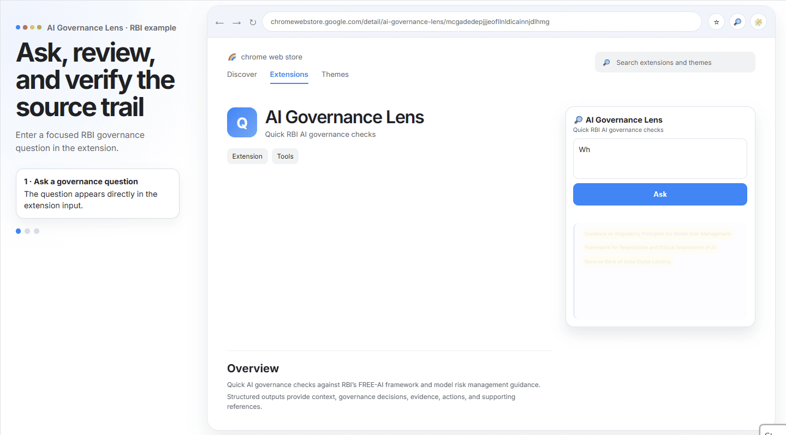

Practical decision-support tools that help organizations move from AI ambition to accountable action, from prioritizing AI initiatives to examining how AI should be governed in enterprise environments.
Two complementary products, one focused on deciding where to apply AI, the other on examining how AI should be governed.
Evaluate and prioritize AI initiatives across business value, risk, complexity, adoption, data readiness and implementation feasibility.
Supports structured use-case assessment, agent scorecards, portfolio prioritization and executive briefings.
Explore the AdvisorEvidence-led assistance for structured AI-governance questions, reviewable responses and supporting regulatory evidence in RBI and BFSI contexts.
Designed to make evidence, authority status and limitations visible to the reviewer.
Explore Governance LensWatch the product walkthroughs, then open the existing interactive demonstrations or live applications.
See a use case move from an initial idea to an executive briefing, multi-agent scorecards and a funding recommendation.

See an RBI governance question become a structured response with supporting evidence and references.

Beyond the individual product experience, these workflow demonstrations show how the capabilities can participate in broader enterprise processes. Proposed integration patterns are identified as such.
Illustrates how governance review can sit within an employee request, compliance review and audit-oversight process.
This is an illustrative workflow demonstration. It does not imply that all downstream enterprise integrations are deployed.
Shows how individual use-case assessments can feed an organizational pipeline, helping leaders compare initiatives and decide what should progress.
Organizational pipeline, API, webhook and workflow automation are proposed integration extensions, not part of the current live Advisor demonstration.
The Advisor brings multiple perspectives into a structured assessment so that a promising idea can be examined before investment and implementation decisions are made.
Run one initiative through the full evaluation and receive an Executive Briefing, a funding recommendation such as Fund with Conditions, the conditions attached to that funding and the key tension leadership needs to resolve.
Every assessment scores Value, Risk, Complexity, Adoption and Data Readiness independently, with supporting figures, estimated dollar ranges, weeks to pilot and confidence levels.
Rank use cases across a shared scoring model, grouped into Quick Win, Strategic Bet, Long Term Play or Reconsider, with portfolio-level observations.
Expand into the reasoning behind each score, including the Value, Risk and Governance, Architecture, Adoption and Data Readiness agents.
Anyone who has to walk into a room and make the case for or against a new AI initiative, at any level, in any domain.
CEOs, CTOs, CIOs, executive stakeholders and boards.
Operational teams, sales heads, sales executives and customer acquisition teams.
Development teams, PMO and product managers across domains.
These solutions are grounded in a broader approach to Enterprise Intelligence Architecture, where AI adoption, data readiness, operating models, governance, risk and accountability are considered together rather than as isolated concerns.
The goal is not simply to introduce AI capabilities. It is to help organizations design the decision workflows, evidence, controls and human oversight needed to move from isolated initiatives toward an AI-enabled enterprise.
For a walkthrough, a governance discussion or an exploration of how these capabilities could fit into your organization's operating model.